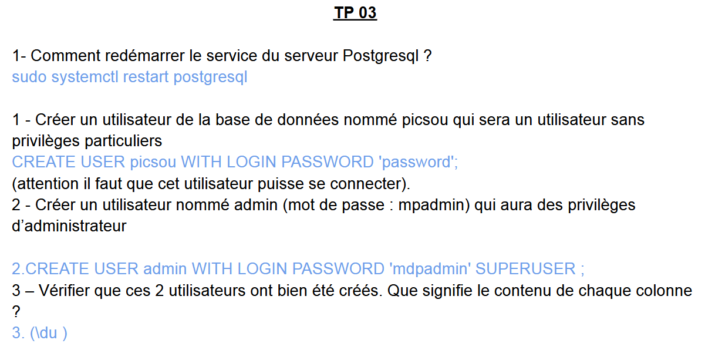
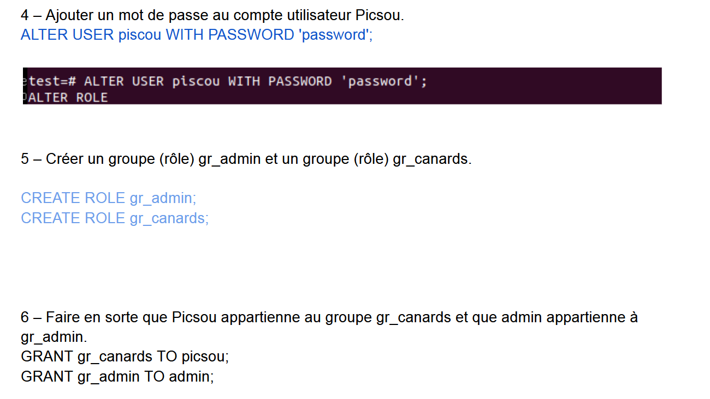
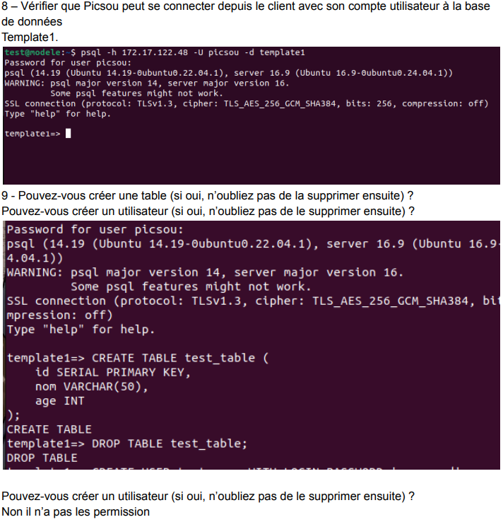

Comprendre la gestion des utilisateurs, des rôles et des permissions dans PostgreSQL.
La commande sudo systemctl restart postgresql permet de redémarrer le serveur PostgreSQL pour appliquer les changements ou corriger un problème.
Deux types d’utilisateurs sont créés :
La commande \du affiche la liste des utilisateurs, leurs attributs et leur appartenance à des groupes.

La commande ALTER USER est utilisée pour modifier le mot de passe ou d’autres informations d’un utilisateur.
Des rôles (groupes) comme gr_admin et gr_canards sont créés pour simplifier la gestion des permissions.
Les utilisateurs sont ajoutés aux rôles via GRANT pour hériter des permissions associées.

On teste la connexion de l’utilisateur picsou avec psql -U picsou -d template1.
